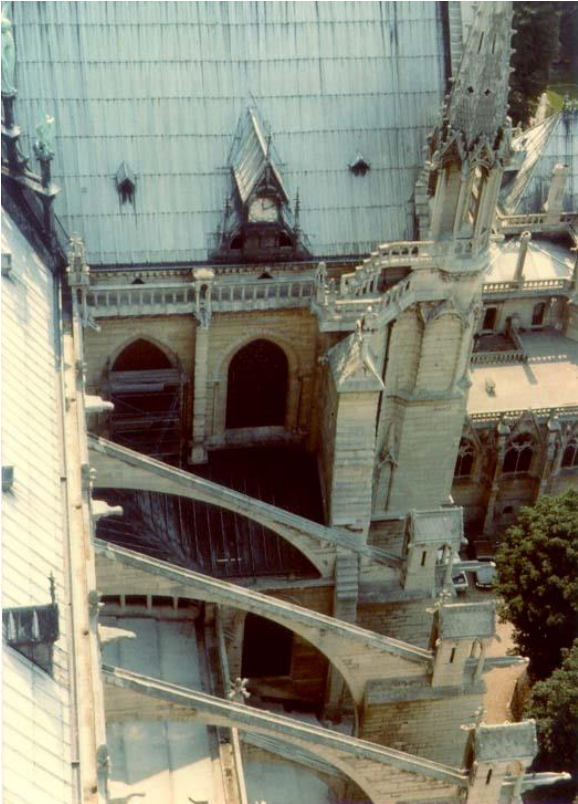
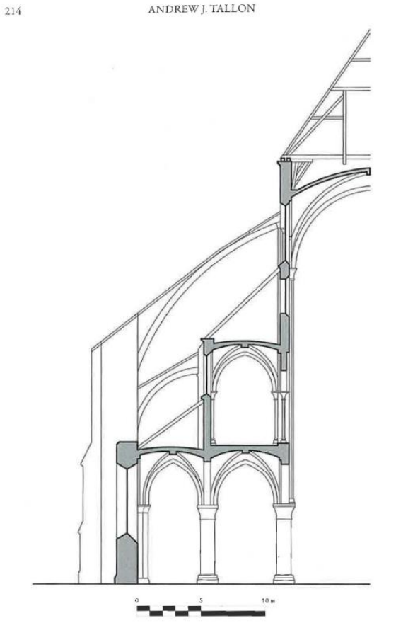
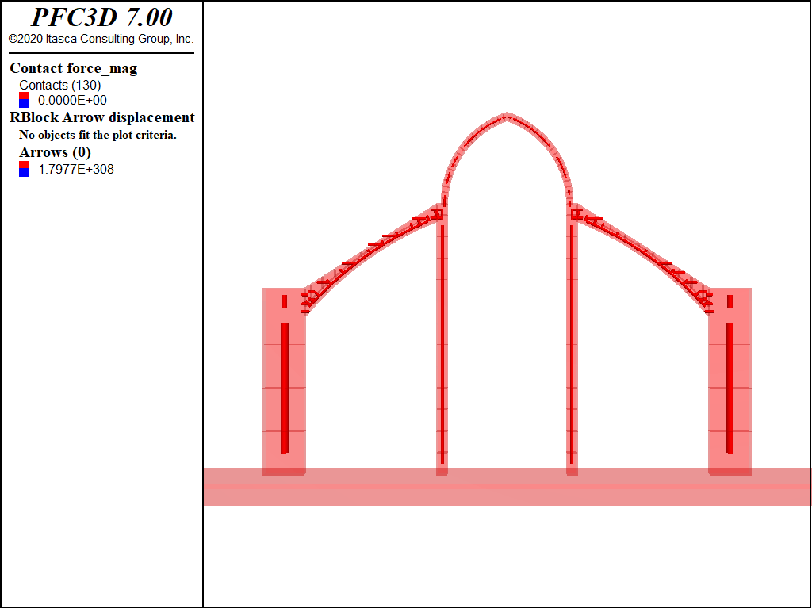
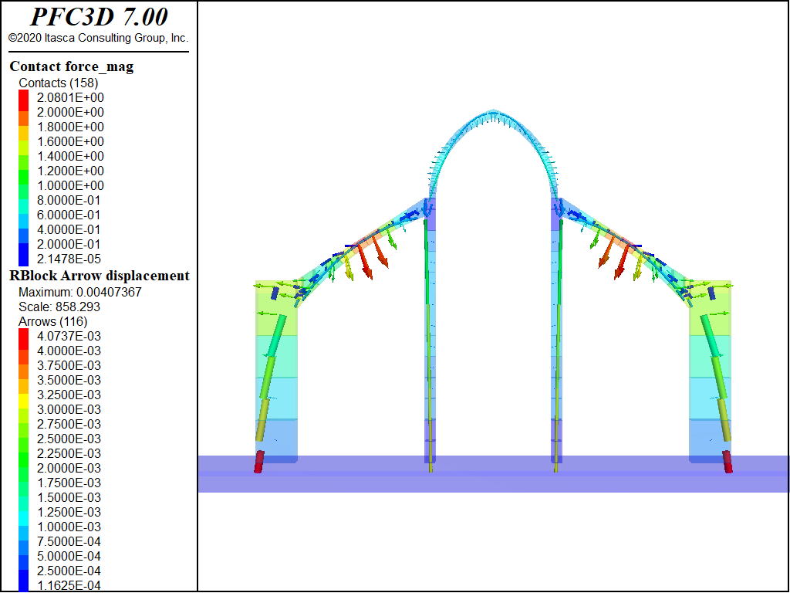
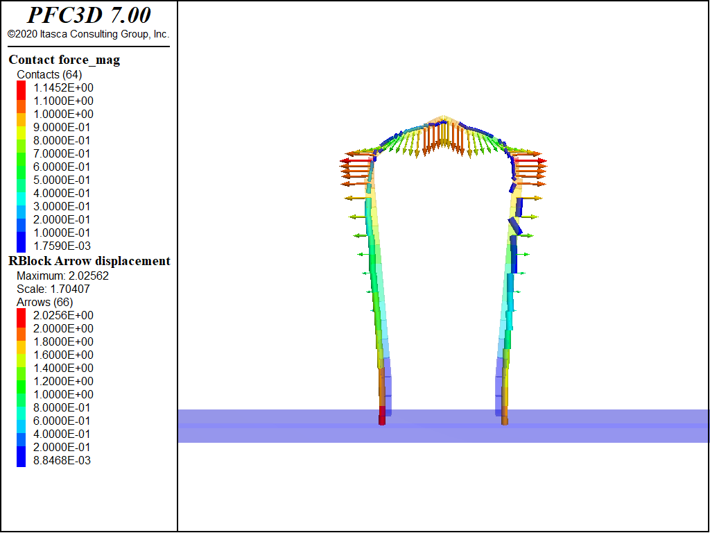

飞扶壁的刚性块体模型
| 算例资源 | |
|---|---|
| 数据文件（Data Files） | 项目：在 PFC3D 中打开“Buttress.prj”[1] |
问题描述
飞扶壁是一种特殊形式的扶壁，由一道从墙体上部延伸至大体量支墩的拱形结构组成，用于将推动墙体向外变形的侧向力传递至地面。这些力来自石砌拱顶以及屋面的风荷载 [Curls1999]。下图给出了法国巴黎圣母院的飞扶壁及其横截面示意图。巴黎圣母院最初的设计并未包含飞扶壁。但在教堂开始建造后，哥特式建筑中流行的较薄墙体不断加高，墙体向外推移时开始出现应力裂缝。为解决这一问题，建筑师在外墙周围增设了支撑。后续增建部分沿用了这种形式。巴黎圣母院是世界上最早使用飞扶壁的建筑之一 [Notredame]。


图 1：巴黎圣母院的扶壁。


图 2：巴黎圣母院飞扶壁的横截面，引自 [Tallon2011]。
这里分析的是一个简单扶壁算例，跨度约为 11 m，高度为 34 m。扶壁采用厚度为 1 m 的块体建模，与实际厚度大致相等。顶部的哥特式拱代表连续拱顶，因此将其重量乘以开间间距 6 m，以向支柱施加正确的向外推力。模型几何形状相对于真实几何作了简化。下图给出了刚性块体模型的几何形状。
块体密度设为 2500 kg/m3。根据上述说明，拱的密度设为该值的六倍，即 15,000 kg/m3。摩擦系数设为 0.7。不过，支柱与扶壁之间已有的接触采用黏结连接。
模拟结果
运行模型时，同时启用局部阻尼和法向黏性阻尼。开启重力后，对带扶壁的模型进行求解，直至达到默认的平均比率限值 1e-5。下图给出了位移和接触。由于刚性块体之间只有一个接触，因此可以清楚地看到力的作用线。随后，移除扶壁，将同一模型运行 2 秒，以清楚展示随之发生的破坏。


图 3：扶壁的初始布置。


图 4：沉降稳定后的扶壁。


图 5：无扶壁时运行 2 秒后的拱。
参考文献
| [Curls1999] | Curls, J.S. 主编，《建筑学词典》（A Dictionary of Architecture），Oxford，第 113–114 页，1999 年。 |
| [Notredame] | http://www.notredamecathedralparis.com/ |
| [Tallon2011] | Tallon, A.J.，“重新思考中世纪结构”（Rethinking Medieval Structure），载于 《中世纪建筑的新方法》（New Approaches to Medieval Architecture），R. O. Bork、W. W. Clark、A. McGehee 主编，Routledge，2011 年。 |
尾注
| [1] | 这些文件位于 PFC3D 的算例对话框（菜单中的）下的“examples/buttress”文件夹中。如果没有出现此条目，请将应用程序数据复制到一个新目录。可使用菜单命令，详细信息见“复制应用程序数据（Copy Application Data）”一节。 |
注意
所用数据文件见本示例末尾。
| 这些内容对您有帮助吗？… 版权与免责声明 | FLAC3D © 2019, Itasca | 原文更新于 2020 年 10 月 8 日 |